6 Scales, axes and coordinates
Every mapped dimension goes through a scale: the position scales :x and :y place marks on the panel, the aesthetic scales style them (Aesthetics and legends). This chapter covers the position scales, set under the plot’s :scales key ({:scales {:x {...} :y {...}}}), and the coordinates, set by the plot keys :coord, :flip and :aspect. A position scale’s kind follows the data (numbers, levels, dates) unless set, and each one draws an axis and grid lines.
(ns reference.scales-axes-coords
(:require [fastmath.core :as m]
[cljplot2.chart :as chart]
[cljplot2.core :as plot]
[cljplot2.describe :as describe]
[cljplot2.pipeline :as pipeline]
[cljplot2.scale.coord :as coord]
[cljplot2.scale.position :as position]
[cljplot2.schema :as schema]
[notebook-utils :as nu])
(:import [java.time LocalDate]))The table below holds the Gapminder countries of 2007; the partial domain and the ticks plots draw them:
Data: Gapminder 2007: life expectancy, population and GDP per capita, data-to-viz example dataset 4_ThreeNum (Yan Holtz; Gapminder via the R gapminder package); licence: MIT (data_to_viz repository).
(def gapminder (nu/dataset :gapminder-2007))| country | continent | life-exp | pop | gdp-per-cap |
|---|---|---|---|---|
| Afghanistan | Asia | 43.828 | 31889923 | 974.5803384 |
| Albania | Europe | 76.423 | 3600523 | 5937.029526 |
| Algeria | Africa | 72.301 | 33333216 | 6223.367465 |
| Angola | Africa | 42.731 | 12420476 | 4797.231267 |
| Argentina | Americas | 75.32 | 40301927 | 12779.37964 |
| Australia | Oceania | 81.235 | 20434176 | 34435.36744 |
| Austria | Europe | 79.829 | 8199783 | 36126.4927 |
| Bahrain | Asia | 75.635 | 708573 | 29796.04834 |
| Bangladesh | Asia | 64.062 | 150448339 | 1391.253792 |
| Belgium | Europe | 79.441 | 10392226 | 33692.60508 |
| Benin | Africa | 56.728 | 8078314 | 1441.284873 |
| Bolivia | Americas | 65.554 | 9119152 | 3822.137084 |
| Bosnia and Herzegovina | Europe | 74.852 | 4552198 | 7446.298803 |
| Botswana | Africa | 50.728 | 1639131 | 12569.85177 |
| Brazil | Americas | 72.39 | 190010647 | 9065.800825 |
| Bulgaria | Europe | 73.005 | 7322858 | 10680.79282 |
| Burkina Faso | Africa | 52.295 | 14326203 | 1217.032994 |
| Burundi | Africa | 49.58 | 8390505 | 430.0706916 |
| Cambodia | Asia | 59.723 | 14131858 | 1713.778686 |
| Cameroon | Africa | 50.43 | 17696293 | 2042.09524 |
| Canada | Americas | 80.653 | 33390141 | 36319.23501 |
| Central African Republic | Africa | 44.741 | 4369038 | 706.016537 |
| Chad | Africa | 50.651 | 10238807 | 1704.063724 |
| Chile | Americas | 78.553 | 16284741 | 13171.63885 |
| China | Asia | 72.961 | 1318683096 | 4959.114854 |
| Colombia | Americas | 72.889 | 44227550 | 7006.580419 |
| Comoros | Africa | 65.152 | 710960 | 986.1478792 |
| Congo, Dem. Rep. | Africa | 46.462 | 64606759 | 277.5518587 |
| Congo, Rep. | Africa | 55.322 | 3800610 | 3632.557798 |
| Costa Rica | Americas | 78.782 | 4133884 | 9645.06142 |
| Cote d'Ivoire | Africa | 48.328 | 18013409 | 1544.750112 |
| Croatia | Europe | 75.748 | 4493312 | 14619.22272 |
| Cuba | Americas | 78.273 | 11416987 | 8948.102923 |
| Czech Republic | Europe | 76.486 | 10228744 | 22833.30851 |
| Denmark | Europe | 78.332 | 5468120 | 35278.41874 |
| Djibouti | Africa | 54.791 | 496374 | 2082.481567 |
| Dominican Republic | Americas | 72.235 | 9319622 | 6025.374752 |
| Ecuador | Americas | 74.994 | 13755680 | 6873.262326 |
| Egypt | Africa | 71.338 | 80264543 | 5581.180998 |
| El Salvador | Americas | 71.878 | 6939688 | 5728.353514 |
| Equatorial Guinea | Africa | 51.579 | 551201 | 12154.08975 |
| Eritrea | Africa | 58.04 | 4906585 | 641.3695236 |
| Ethiopia | Africa | 52.947 | 76511887 | 690.8055759 |
| Finland | Europe | 79.313 | 5238460 | 33207.0844 |
| France | Europe | 80.657 | 61083916 | 30470.0167 |
| Gabon | Africa | 56.735 | 1454867 | 13206.48452 |
| Gambia | Africa | 59.448 | 1688359 | 752.7497265 |
| Germany | Europe | 79.406 | 82400996 | 32170.37442 |
| Ghana | Africa | 60.022 | 22873338 | 1327.60891 |
| Greece | Europe | 79.483 | 10706290 | 27538.41188 |
| Guatemala | Americas | 70.259 | 12572928 | 5186.050003 |
| Guinea | Africa | 56.007 | 9947814 | 942.6542111 |
| Guinea-Bissau | Africa | 46.388 | 1472041 | 579.231743 |
| Haiti | Americas | 60.916 | 8502814 | 1201.637154 |
| Honduras | Americas | 70.198 | 7483763 | 3548.330846 |
| Hong Kong, China | Asia | 82.208 | 6980412 | 39724.97867 |
| Hungary | Europe | 73.338 | 9956108 | 18008.94444 |
| Iceland | Europe | 81.757 | 301931 | 36180.78919 |
| India | Asia | 64.698 | 1110396331 | 2452.210407 |
| Indonesia | Asia | 70.65 | 223547000 | 3540.651564 |
| Iran | Asia | 70.964 | 69453570 | 11605.71449 |
| Iraq | Asia | 59.545 | 27499638 | 4471.061906 |
| Ireland | Europe | 78.885 | 4109086 | 40675.99635 |
| Israel | Asia | 80.745 | 6426679 | 25523.2771 |
| Italy | Europe | 80.546 | 58147733 | 28569.7197 |
| Jamaica | Americas | 72.567 | 2780132 | 7320.880262 |
| Japan | Asia | 82.603 | 127467972 | 31656.06806 |
| Jordan | Asia | 72.535 | 6053193 | 4519.461171 |
| Kenya | Africa | 54.11 | 35610177 | 1463.249282 |
| Korea, Dem. Rep. | Asia | 67.297 | 23301725 | 1593.06548 |
| Korea, Rep. | Asia | 78.623 | 49044790 | 23348.13973 |
| Kuwait | Asia | 77.588 | 2505559 | 47306.98978 |
| Lebanon | Asia | 71.993 | 3921278 | 10461.05868 |
| Lesotho | Africa | 42.592 | 2012649 | 1569.331442 |
| Liberia | Africa | 45.678 | 3193942 | 414.5073415 |
| Libya | Africa | 73.952 | 6036914 | 12057.49928 |
| Madagascar | Africa | 59.443 | 19167654 | 1044.770126 |
| Malawi | Africa | 48.303 | 13327079 | 759.3499101 |
| Malaysia | Asia | 74.241 | 24821286 | 12451.6558 |
| Mali | Africa | 54.467 | 12031795 | 1042.581557 |
| Mauritania | Africa | 64.164 | 3270065 | 1803.151496 |
| Mauritius | Africa | 72.801 | 1250882 | 10956.99112 |
| Mexico | Americas | 76.195 | 108700891 | 11977.57496 |
| Mongolia | Asia | 66.803 | 2874127 | 3095.772271 |
| Montenegro | Europe | 74.543 | 684736 | 9253.896111 |
| Morocco | Africa | 71.164 | 33757175 | 3820.17523 |
| Mozambique | Africa | 42.082 | 19951656 | 823.6856205 |
| Myanmar | Asia | 62.069 | 47761980 | 944 |
| Namibia | Africa | 52.906 | 2055080 | 4811.060429 |
| Nepal | Asia | 63.785 | 28901790 | 1091.359778 |
| Netherlands | Europe | 79.762 | 16570613 | 36797.93332 |
| New Zealand | Oceania | 80.204 | 4115771 | 25185.00911 |
| Nicaragua | Americas | 72.899 | 5675356 | 2749.320965 |
| Niger | Africa | 56.867 | 12894865 | 619.6768924 |
| Nigeria | Africa | 46.859 | 135031164 | 2013.977305 |
| Norway | Europe | 80.196 | 4627926 | 49357.19017 |
| Oman | Asia | 75.64 | 3204897 | 22316.19287 |
| Pakistan | Asia | 65.483 | 169270617 | 2605.94758 |
| Panama | Americas | 75.537 | 3242173 | 9809.185636 |
| Paraguay | Americas | 71.752 | 6667147 | 4172.838464 |
| … | … | … | … | … |
The table below counts the countries per continent; the bar plots draw it:
(def counts (for [[continent rs] (group-by :continent gapminder)] {:continent continent :n (count rs)}))| continent | n |
|---|---|
| Asia | 33 |
| Europe | 30 |
| Africa | 52 |
| Americas | 25 |
| Oceania | 2 |
The table below holds the mtcars cars; the domain and axis sections and two scale kinds draw them:
Data: Motor Trend car road tests (1974), R datasets package mtcars (Henderson & Velleman 1981); licence: Part of R (GPL-2 | GPL-3).
(def mtcars (nu/dataset :mtcars))| model | mpg | cyl | disp | hp | drat | wt | qsec | vs | am | gear | carb |
|---|---|---|---|---|---|---|---|---|---|---|---|
| Mazda RX4 | 21 | 6 | 160 | 110 | 3.9 | 2.62 | 16.46 | 0 | 1 | 4 | 4 |
| Mazda RX4 Wag | 21 | 6 | 160 | 110 | 3.9 | 2.875 | 17.02 | 0 | 1 | 4 | 4 |
| Datsun 710 | 22.8 | 4 | 108 | 93 | 3.85 | 2.32 | 18.61 | 1 | 1 | 4 | 1 |
| Hornet 4 Drive | 21.4 | 6 | 258 | 110 | 3.08 | 3.215 | 19.44 | 1 | 0 | 3 | 1 |
| Hornet Sportabout | 18.7 | 8 | 360 | 175 | 3.15 | 3.44 | 17.02 | 0 | 0 | 3 | 2 |
| Valiant | 18.1 | 6 | 225 | 105 | 2.76 | 3.46 | 20.22 | 1 | 0 | 3 | 1 |
| Duster 360 | 14.3 | 8 | 360 | 245 | 3.21 | 3.57 | 15.84 | 0 | 0 | 3 | 4 |
| Merc 240D | 24.4 | 4 | 146.7 | 62 | 3.69 | 3.19 | 20 | 1 | 0 | 4 | 2 |
| Merc 230 | 22.8 | 4 | 140.8 | 95 | 3.92 | 3.15 | 22.9 | 1 | 0 | 4 | 2 |
| Merc 280 | 19.2 | 6 | 167.6 | 123 | 3.92 | 3.44 | 18.3 | 1 | 0 | 4 | 4 |
| Merc 280C | 17.8 | 6 | 167.6 | 123 | 3.92 | 3.44 | 18.9 | 1 | 0 | 4 | 4 |
| Merc 450SE | 16.4 | 8 | 275.8 | 180 | 3.07 | 4.07 | 17.4 | 0 | 0 | 3 | 3 |
| Merc 450SL | 17.3 | 8 | 275.8 | 180 | 3.07 | 3.73 | 17.6 | 0 | 0 | 3 | 3 |
| Merc 450SLC | 15.2 | 8 | 275.8 | 180 | 3.07 | 3.78 | 18 | 0 | 0 | 3 | 3 |
| Cadillac Fleetwood | 10.4 | 8 | 472 | 205 | 2.93 | 5.25 | 17.98 | 0 | 0 | 3 | 4 |
| Lincoln Continental | 10.4 | 8 | 460 | 215 | 3 | 5.424 | 17.82 | 0 | 0 | 3 | 4 |
| Chrysler Imperial | 14.7 | 8 | 440 | 230 | 3.23 | 5.345 | 17.42 | 0 | 0 | 3 | 4 |
| Fiat 128 | 32.4 | 4 | 78.7 | 66 | 4.08 | 2.2 | 19.47 | 1 | 1 | 4 | 1 |
| Honda Civic | 30.4 | 4 | 75.7 | 52 | 4.93 | 1.615 | 18.52 | 1 | 1 | 4 | 2 |
| Toyota Corolla | 33.9 | 4 | 71.1 | 65 | 4.22 | 1.835 | 19.9 | 1 | 1 | 4 | 1 |
| Toyota Corona | 21.5 | 4 | 120.1 | 97 | 3.7 | 2.465 | 20.01 | 1 | 0 | 3 | 1 |
| Dodge Challenger | 15.5 | 8 | 318 | 150 | 2.76 | 3.52 | 16.87 | 0 | 0 | 3 | 2 |
| AMC Javelin | 15.2 | 8 | 304 | 150 | 3.15 | 3.435 | 17.3 | 0 | 0 | 3 | 2 |
| Camaro Z28 | 13.3 | 8 | 350 | 245 | 3.73 | 3.84 | 15.41 | 0 | 0 | 3 | 4 |
| Pontiac Firebird | 19.2 | 8 | 400 | 175 | 3.08 | 3.845 | 17.05 | 0 | 0 | 3 | 2 |
| Fiat X1-9 | 27.3 | 4 | 79 | 66 | 4.08 | 1.935 | 18.9 | 1 | 1 | 4 | 1 |
| Porsche 914-2 | 26 | 4 | 120.3 | 91 | 4.43 | 2.14 | 16.7 | 0 | 1 | 5 | 2 |
| Lotus Europa | 30.4 | 4 | 95.1 | 113 | 3.77 | 1.513 | 16.9 | 1 | 1 | 5 | 2 |
| Ford Pantera L | 15.8 | 8 | 351 | 264 | 4.22 | 3.17 | 14.5 | 0 | 1 | 5 | 4 |
| Ferrari Dino | 19.7 | 6 | 145 | 175 | 3.62 | 2.77 | 15.5 | 0 | 1 | 5 | 6 |
| Maserati Bora | 15 | 8 | 301 | 335 | 3.54 | 3.57 | 14.6 | 0 | 1 | 5 | 8 |
| Volvo 142E | 21.4 | 4 | 121 | 109 | 4.11 | 2.78 | 18.6 | 1 | 1 | 4 | 2 |
The tables below hold a made-up spiral and points on an ellipse; the coordinates section draws them:
(def spiral (for [t (range 0 13)] {:t t :r (+ 1 t)}))| t | r |
|---|---|
| 0 | 1 |
| 1 | 2 |
| 2 | 3 |
| 3 | 4 |
| 4 | 5 |
| 5 | 6 |
| 6 | 7 |
| 7 | 8 |
| 8 | 9 |
| 9 | 10 |
| 10 | 11 |
| 11 | 12 |
| 12 | 13 |
(def ellipse (for [t (m/slice-range 0 m/TWO_PI 64)] {:x (m/cos t) :y (m/* 0.5 (m/sin t))}))| x | y |
|---|---|
| 1.0 | 0.0 |
| 0.9950307753654014 | 0.049783923297908324 |
| 0.9801724878485438 | 0.09907307159969878 |
| 0.9555728057861408 | 0.14737758720545208 |
| 0.9214762118704076 | 0.19421739813734734 |
| 0.8782215733702285 | 0.2391269893106591 |
| 0.8262387743159949 | 0.281660029031811 |
| 0.766044443118978 | 0.3213938048432696 |
| 0.6982368180860729 | 0.35793342462985916 |
| 0.6234898018587336 | 0.3909157412340149 |
| 0.5425462638657594 | 0.4200129615753857 |
| 0.4562106573531631 | 0.4449359044057343 |
| 0.3653410243663952 | 0.46543687432210207 |
| 0.27084046814300516 | 0.481312123475006 |
| 0.17364817766693041 | 0.492403876506104 |
| 0.07473009358642439 | 0.49860189859059006 |
| -0.02493069173807269 | 0.4998445910004081 |
| -0.12434370464748494 | 0.49611960330008603 |
| -0.22252093395631434 | 0.4874639560909118 |
| -0.3184866502516843 | 0.4739636730835659 |
| -0.4112871031306114 | 0.4557529261558366 |
| -0.4999999999999998 | 0.43301270189221935 |
| -0.5837436722347896 | 0.4059690028579283 |
| -0.6616858375968592 | 0.3748906014838672 |
| -0.7330518718298261 | 0.34008636888545984 |
| -0.7971325072229222 | 0.30190220516273886 |
| -0.8532908816321556 | 0.26071760168974906 |
| -0.900968867902419 | 0.21694186955877912 |
| -0.9396926207859083 | 0.17101007166283444 |
| -0.9690772862290778 | 0.12337869884514692 |
| -0.9888308262251285 | 0.07452113308808736 |
| -0.9987569212189223 | 0.02492294283034874 |
| -0.9987569212189223 | -0.024922942830348398 |
| -0.9888308262251285 | -0.07452113308808724 |
| -0.9690772862290781 | -0.12337869884514659 |
| -0.9396926207859084 | -0.17101007166283433 |
| -0.9009688679024191 | -0.216941869558779 |
| -0.8532908816321557 | -0.26071760168974895 |
| -0.7971325072229226 | -0.3019022051627386 |
| -0.7330518718298262 | -0.34008636888545973 |
| -0.6616858375968597 | -0.374890601483867 |
| -0.5837436722347898 | -0.40596900285792825 |
| -0.5000000000000004 | -0.4330127018922192 |
| -0.4112871031306116 | -0.45575292615583657 |
| -0.318486650251685 | -0.4739636730835658 |
| -0.2225209339563146 | -0.4874639560909118 |
| -0.12434370464748584 | -0.496119603300086 |
| -0.024930691738073156 | -0.4998445910004081 |
| 0.07473009358642348 | -0.4986018985905901 |
| 0.17364817766692997 | -0.49240387650610407 |
| 0.2708404681430043 | -0.4813121234750062 |
| 0.36534102436639454 | -0.46543687432210223 |
| 0.45621065735316285 | -0.44493590440573433 |
| 0.5425462638657597 | -0.42001296157538565 |
| 0.6234898018587334 | -0.39091574123401496 |
| 0.698236818086073 | -0.35793342462985916 |
| 0.7660444431189778 | -0.3213938048432698 |
| 0.8262387743159949 | -0.281660029031811 |
| 0.8782215733702283 | -0.2391269893106593 |
| 0.9214762118704076 | -0.19421739813734737 |
| 0.9555728057861406 | -0.14737758720545235 |
| 0.9801724878485438 | -0.09907307159969886 |
| 0.9950307753654013 | -0.04978392329790864 |
| 1.0 | -1.2246467991473532E-16 |
6.1 Kind and domain
These options set the scale kind (Scale kinds below) and the data range it covers. The scale extends the domain to nice tick values (:nice), then pads it (the charts’ padding, or :expand). The plots below read cylinder counts as three bands (left) and fix both domains, x without padding (right):
(plot/render-image (plot/arrange [{:data mtcars
:mapping {:x :cyl :y :mpg}
:charts [(chart/box)]
:scales {:x {:type :categorical}}}
{:data mtcars
:mapping {:x :wt :y :mpg}
:charts [(chart/scatter)]
:scales {:x {:domain [1.5 5.5] :expand [0 0] :nice false} :y {:domain [0 40]}}}]
{:columns 2})
{:width 800 :height 320})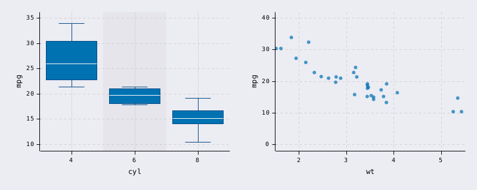
A partial domain such as [0 nil] fixes one end; the charts’ padding and nice rounding still apply at the other. Only continuous kinds other than :interpolated take one, and the data must reach past the fixed end. The left plot covers the data’s range; the right one starts life expectancy at zero:
(plot/render-image (plot/arrange (for [[title y-scale] [["the data's range" {}] [":domain [0 nil]" {:domain [0 nil]}]]]
{:data gapminder
:mapping {:x :gdp-per-cap :y :life-exp}
:charts [(chart/scatter)]
:scales {:x {:kind :log} :y y-scale}
:labels {:title title}})
{:columns 2})
{:width 800 :height 320})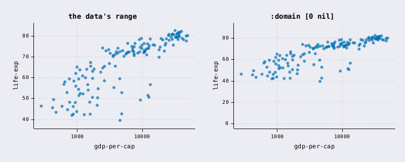
The built plot’s :scale-specs hold the kind each scale gets from the data and the charts’ statistics. Below, a bar chart puts levels on x and a histogram puts bins and counts on its axes:
(into {} (for [[title p] {"bar" {:data mtcars :mapping {:x #(str (:cyl %) " cyl") :y :mpg} :charts [(chart/bar)]}
"histogram" {:data mtcars :mapping {:x :mpg} :charts [(chart/histogram)]}}]
[title (update-vals (select-keys (:scale-specs (plot/build p)) [:x :y]) :kind)])){"bar" {:x :bands, :y :linear}, "histogram" {:x :linear, :y :linear}}6.2 Ticks and labels
These options set where ticks go and how their labels read. Minor ticks get grid lines only when the theme draws them ([:panel :grid :minor], :none by default). The plot below writes powers of ten on a log x axis with minor ticks and their grid lines, and gives y its tick values and a formatter:
(plot/render-image {:data gapminder
:mapping {:x :gdp-per-cap :y :life-exp}
:charts [(chart/scatter)]
:scales {:x {:kind :log :formatter :power :minor-ticks 9}
:y {:ticks [40 50 60 70 80] :formatter #(str % " y")}}
:theme {:panel {:grid {:minor {:color [200 200 215] :line-width 0.5 :dash :none}}}}}
{:width 600 :height 350})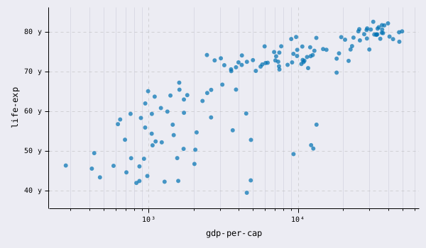
6.3 Order and direction
These options order the bands and set the axis direction. The plots below order the continents by their count, largest first (left), and reverse the y axis (right):
(plot/render-image (plot/arrange [{:data counts
:mapping {:x :continent :y :n}
:charts [(chart/bar)]
:scales {:x {:order-by #(reduce + (map :n %)) :descending true}}
:labels {:title "ordered by count"}}
{:data counts
:mapping {:x :continent :y :n}
:charts [(chart/bar)]
:scales {:y {:reverse true}}
:labels {:title "y reversed"}}]
{:columns 2})
{:width 900 :height 320})6.4 Axis
These options set what the scale’s axis draws. Builders naming data items on an axis, such as dendrogram leaves, set :overlapping-labels :keep. The plots below draw the x axis without grid lines and y grid lines without an axis (left), and y ticks of a display domain (right):
(plot/render-image (plot/arrange [{:data mtcars
:mapping {:x :wt :y :mpg}
:charts [(chart/scatter)]
:scales {:x {:axis :no-grid} :y {:axis :grid}}
:labels {:title "x :no-grid; y :grid"}}
{:data mtcars
:mapping {:x :wt :y :mpg}
:charts [(chart/scatter)]
:scales {:y {:axis-domain [0 1]}}
:labels {:title "y ticks of [0 1] over the panel"}}]
{:columns 2})
{:width 900 :height 320})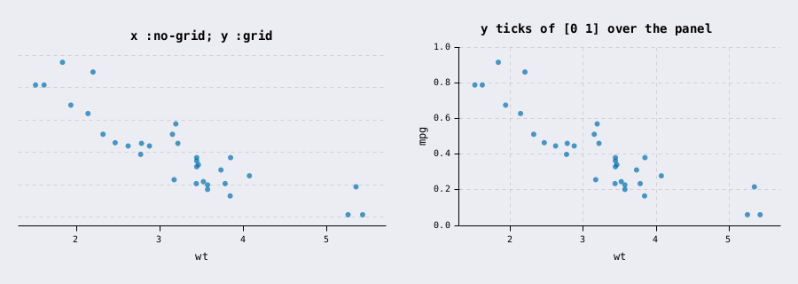
6.5 wadogo attributes
cljplot2 passes these options to the wadogo scale of the kind; each kind below lists the ones it reads. The plot below widens the space between and around the bands:
(plot/render-image {:data counts
:mapping {:x :continent :y :n}
:charts [(chart/bar {:width 1.0})]
:scales {:x {:padding-in 0.5 :padding-out 1.0}}}
{:width 500 :height 280})
6.6 Scale kinds
Each kind below is described by wadogo (wadogo.scale/kind-info). cljplot2 sets a kind’s :domain (the data extent or the spec’s :domain), its :range (the panel’s pixels), ticks and tick format itself - through the options above; the remaining attributes of a kind are the options under wadogo attributes.
6.6.1 Linear
:linear kind: continuous numerical domain mapped linearly to a continuous numerical range (d3 scaleLinear).
Attributes:
:domain(default[0.0 1.0]): two numbers in any order; a longer sequence is reduced to its minimum and maximum (use the:interpolatedkind for piecewise mappings).:range(default[0.0 1.0]): two numbers, reduced the same way.:clamp(defaultfalse): when truthy, values outside the domain are constrained to it, and the inverse returns values inside the domain.:unknown(defaultnil): returned fornilandNaNinput.:round(defaultfalse): when truthy, the result is rounded half up (d3rangeRound).
Forward maps the domain ends to the range ends and extrapolates outside; inverse maps back.
Ticks are d3 style (:ticks-method :default, 10 ticks) or R pretty() style (:pretty, 5 ticks); nice extends the domain to multiples of the tick step.
A degenerate domain (equal ends) maps values below it to the range start, above it to the range end and the value itself to the middle of the range (d3 maps every value to the middle). A degenerate range behaves the same way in the inverse.
(plot/render-image {:data mtcars
:mapping {:x :hp :y :mpg}
:charts [(chart/scatter)]}
{:width 500 :height 250})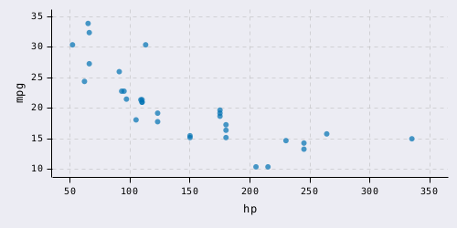
6.6.2 Log
The scale takes positive values only; :base sets the tick values (here powers of two).
:log kind: logarithmic mapping of a positive or negative numerical domain to a continuous numerical range (d3 scaleLog).
Attributes:
:domain(default[1.0 10.0]): two numbers of the same sign; a longer sequence is reduced to its minimum and maximum. A one-value domain[x]together with:basebecomes[x base].:range(default[0.0 1.0]).:base(default10.0): base of the logarithm, greater than1.0, used only by ticks andnice(the mapping doesn’t depend on it).:clamp,:unknown,:round: as for the:linearkind.
Forward is linear in the logarithm of the absolute value; values of the other sign than the domain (and zero) give NaN.
Ticks are powers of the base and their subdivisions (d3 style, one tick per power by default) or, with :ticks-method :pretty, the grid with the tick count closest to the requested one (5 by default). nice extends the domain to the outer ticks.
A domain containing or crossing zero throws ex-info with {:domain domain}. A degenerate domain behaves as for the :linear kind.
(plot/render-image {:data (for [i (range 1 11)] {:x (m/pow 2 i) :y i})
:mapping {:x :x :y :y}
:charts [(chart/line) (chart/scatter)]
:scales {:x {:kind :log :base 2}}}
{:width 500 :height 250})
6.6.3 Pow
:pow kind: power mapping of a continuous numerical domain to a continuous numerical range (d3 scalePow).
Attributes:
:domain(default[0.0 1.0]),:range(default[0.0 1.0]): as for the:linearkind.:exponent(default0.5, square root).:clamp,:unknown,:round: as for the:linearkind.
Forward is linear in sign(x) * |x|^exponent, so negative values are mirrored. A negative exponent gives a decreasing transform, normalised back to the range ends. Exponent 0.0 maps every value, zero included, to 1.0, so the transformed domain is degenerate and every value maps to the middle of the range. Ticks and nice are linear in the domain. A degenerate domain behaves as for the :linear kind.
(plot/render-image {:data mtcars
:mapping {:x :hp :y :mpg}
:charts [(chart/scatter)]
:scales {:x {:kind :pow :exponent 0.5}}}
{:width 500 :height 250})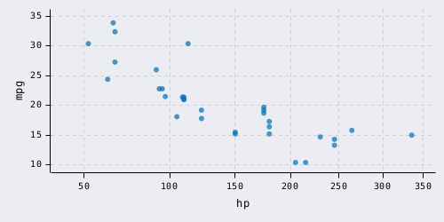
6.6.4 Symlog
For data of both signs over many magnitudes. cljplot2 doesn’t pass the constant :C, so wadogo uses its default 1.0.
:symlog kind: bi-symmetric logarithmic mapping of a continuous numerical domain (any sign, zero included) to a continuous numerical range (d3 scaleSymlog).
Attributes:
:domain(default[0.0 1.0]),:range(default[0.0 1.0]): as for the:linearkind.:C(default1.0, also fornil): the positive constant of the transformsign(x) * log(1 + |x|/C); values with|x|much smaller thanCare mapped almost linearly.0.0givesNaNfor every value, a negativeCisn’t meaningful.:base: deprecated and ignored (the base of the logarithm cancels in the mapping); kept for compatibility.:clamp,:unknown,:round: as for the:linearkind.
Ticks and nice are linear in the domain. A degenerate domain behaves as for the :linear kind.
See: Webber, A bi-symmetric log transformation for wide-range data, Measurement Science and Technology (2013).
(plot/render-image {:data (for [i (range -40 41)] {:x (* i i i) :y i})
:mapping {:x :x :y :y}
:charts [(chart/scatter)]
:scales {:x {:kind :symlog}}}
{:width 500 :height 250})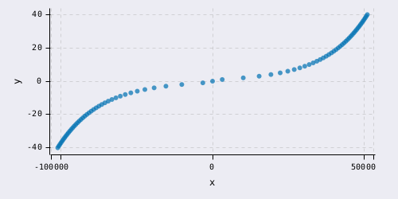
6.6.5 Bands
Bands is the default kind for strings and keywords.
:bands kind: discrete values mapped to evenly distributed bands (intervals) of a continuous numerical range (d3 scaleBand).
Attributes:
:domain(default1): the domain values (repeated values removed, first occurrences kept) or their countn(values0..n-1).:range(default[0.0 1.0]): two numbers in any order; a longer sequence is reduced to its minimum and maximum.:padding-in(default0.0): space between bands as a proportion of the step, constrained to[0, 1](d3paddingInner).:padding-out(default0.0): space before the first and after the last band as a proportion of the step (d3paddingOuter), non-negative.:align-outer(default0.5): how the outer space is distributed:0.0all after the last band,1.0all before the first band (d3align).:align(default0.5): position of the point inside every band, from0.0(band start) to1.0(band end); also:spread(positions spread from0.0to1.0over the bands) or a sequence of positions (cycled).:round(defaultfalse): when truthy, the step is floored and the band start and width are rounded, as d3round.:unknown(defaultnil): returned for values outside the domain.
Forward returns the point of a band; with a second truthy argument it returns the band map:
:value: the domain value.:rstart,:rend: the band ends;:rstartis the end nearer the range start, so for a reversed range:rstartis larger than:rend.:point: the point at:alignfrom:rstartto:rend.
The band width and the step (distance between band starts) are stored under :bandwidth and :step, the band maps under :bands in [[data]]. The inverse returns the domain value of the band containing a number (ends included), :unknown for padding and values outside the range. :padding-in is constrained to [0, 1]; 1.0 gives bands of zero width (as the :point kind). An empty domain gives no bands.
Ticks are the domain values; nice returns the scale unchanged.
(plot/render-image {:data counts
:mapping {:x :continent :y :n}
:charts [(chart/bar)]
:scales {:x {:align-outer 0.0 :padding-out 2.0}}}
{:width 500 :height 250})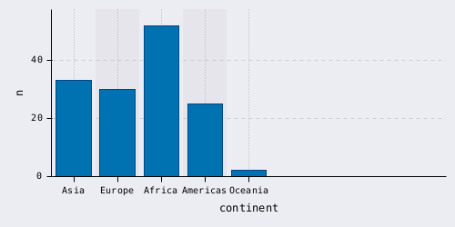
6.6.6 Datetime
The plot below formats dates with a pattern:
:datetime kind: a datetime domain mapped linearly to a continuous numerical range (d3 scaleUtc).
Attributes:
:domain(default: the year before the momentwadogo.configwas loaded): two datetimes in any order, a map with:startand:end, or a longer sequence (reduced to its earliest and latest value). Accepted types:LocalDateTime,LocalDate(start of the day),LocalTime(today),java.util.Date, andInstant,ZonedDateTimeandOffsetDateTime(converted to the UTC local datetime).:range(default[0.0 1.0]): as for the:linearkind.:clamp,:unknown,:round: as for the:linearkind.
A degenerate domain (equal ends) maps earlier datetimes to the range start, later ones to the range end and the domain datetime to the middle; it has no default ticks. A degenerate range behaves the same way in the inverse. LocalTime values are placed on the current date at each conversion, so a scale built from times shouldn’t outlive the day.
The domain is stored as LocalDateTime values. Forward accepts the same types as the domain and is linear in the elapsed time (millisecond precision with the nanosecond fraction); the inverse returns a LocalDateTime rounded to the millisecond. The domain length in milliseconds (BigDecimal, negative for a reversed domain) is stored under :millis in [[data]].
Default ticks (:ticks-method :default, 10 ticks) are spaced by a whole number of the time unit nearest to the tick step, starting at the domain start truncated to that unit, strictly inside the domain (not aligned to calendar units); :pretty ticks (5 ticks) follow R’s pretty() for date-times. Ticks of a reversed domain are reversed. Values outside the domain are extrapolated (unless clamped). nice extends the domain to whole time units (:default) or to the outer pretty ticks (:pretty).
(plot/render-image {:data (for [m (range 24)]
{:date (.plusMonths (LocalDate/of 2020 1 1) m) :v (+ 10 (mod (* m 7) 9))})
:mapping {:x :date :y :v}
:charts [(chart/line) (chart/scatter)]
:scales {:x {:formatter "MMM yyyy"}}}
{:width 600 :height 250})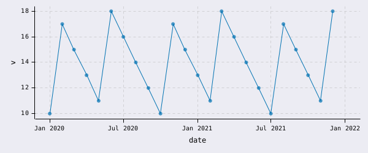
6.6.7 Interpolated
The scale maps the domain values piecewise onto evenly spaced or given :stops of the panel through an :interpolator; these options set both:
:interpolated kind: piecewise mapping through (domain, range) pairs with an interpolation method.
Attributes:
:domain(default[0.0 0.5 1.0]),:range(default[0.0 0.5 1.0]): sequences of numbers of equal length, paired by position; the pairs are sorted by the domain value. Extra values of the longer sequence are dropped (also from the stored domain and range). Repeated domain values are rejected by mostfastmathinterpolators withex-infowhen the scale is created.:interpolator(default:linear): afastmath.interpolation/interpolationmethod keyword (as:linear,:pchip,:monotone,:step) or a function ofxs,ysand the parameters returning a function of one number.:interpolator-params(defaultnil): a sequence of extra arguments of the interpolator, as[{:bandwidth 0.7}]for:loess.:clamp,:unknown,:round: as for the:linearkind; the clamping interval is spanned by the smallest and the largest domain value.
A scale should be monotone: use monotone data with a monotonicity preserving method (:linear, :pchip, :monotone, step methods). :cubic, :loess, :shepard and similar can overshoot between the points.
The inverse solves forward(x) = y by bisection, so it’s the inverse of the forward curve for any monotone method. The direction (increasing or decreasing) is given by the forward values at the smallest and the largest domain value. The inverse returns the smallest domain value when forward gives y there, otherwise the smallest x with forward(x) at or beyond y (in the direction of the curve), so a plateau of a step method gives its start, and a value inside a jump gives the jump position.
Values beyond the forward values at the domain ends are searched outside the domain with growing steps, as long as the extrapolated curve keeps moving toward the value; NaN when it turns back (smooth methods extrapolate with turning polynomials), stays constant (step methods), gives NaN, or doesn’t reach the value. With :clamp such values give the nearer domain end instead.
Ticks and nice use the first and last domain value; nice replaces only these two.
The :interpolator takes a fastmath 1D interpolation method or a function:
(sort schema/interpolation-methods)(:akima
:b-spline
:barycentric
:cir
:cubic
:cubic-smoothing
:divided-difference
:gp
:kriging
:linear
:loess
:microsphere-projection
:monotone
:neville
:pava
:pchip
:polynomial
:rbf
:shepard
:sprague
:step
:step-after
:step-before)Here the domain values 1, 40, 60 and 100 sit at evenly spaced stops, so each of the three segments gets a third of the axis - 40 to 60 is stretched, 1 to 40 and 60 to 100 are squeezed:
(plot/render-image {:data (for [i (range 1 101)] {:x i :y (m/log i)})
:mapping {:x :x :y :y}
:charts [(chart/line)]
:scales {:x {:kind :interpolated :domain [1 40 60 100] :ticks [1 20 40 50 60 80 100]}}}
{:width 600 :height 250})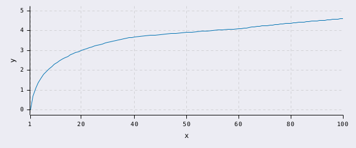
6.6.8 Radial
The plot below draws polar bars whose areas read as values:
:radial kind: linear mapping of a continuous numerical domain to the squared range, so that the range values are radii of areas proportional to the domain values (d3 scaleRadial).
Attributes:
:domain(default[0.0 1.0]),:range(default[0.0 1.0]): as for the:linearkind.:clamp,:unknown,:round: as for the:linearkind (rounding is applied to the radius).
Forward is sign(y) * sqrt(|y|) of the linear mapping of the domain to the signed squares of the range ends; inverse is its inverse. Ticks and nice are linear in the domain. Range ends of different signs are allowed (squares keep the sign). A degenerate domain maps values below it to the range start, above it to the range end and the value itself to the signed square root of the middle of the squared range.
(plot/render-image {:data counts
:mapping {:x :continent :y :n :color :continent}
:charts [(chart/bar {:width 1.0})]
:scales {:y {:kind :radial}}
:coord {:kind :polar}
:legend false}
{:width 400 :height 400})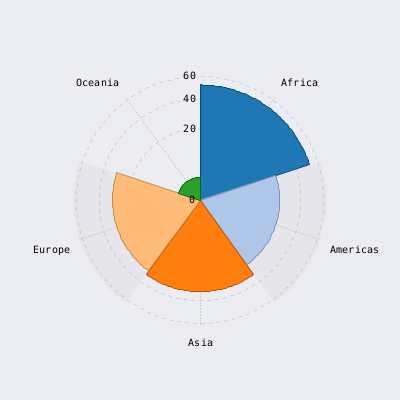
6.7 Coordinates
These plot keys set the coordinate system. They sit at the top of the plot map, beside :scales:
The plots below flip a bar chart (left) and lay bars over 270 degrees of a ring with a hole (right):
(plot/render-image (plot/arrange [{:data counts
:mapping {:x :continent :y :n}
:charts [(chart/bar)]
:flip true
:scales {:x {:reverse true}}
:labels {:title ":flip true"}}
{:data counts
:mapping {:x :continent :y :n :color :continent}
:charts [(chart/bar {:width 1.0})]
:coord {:kind :polar :inner 0.2 :span 270 :start -135}
:labels {:title "polar, 270 degrees"}
:legend false}]
{:columns 2})
{:width 900 :height 400})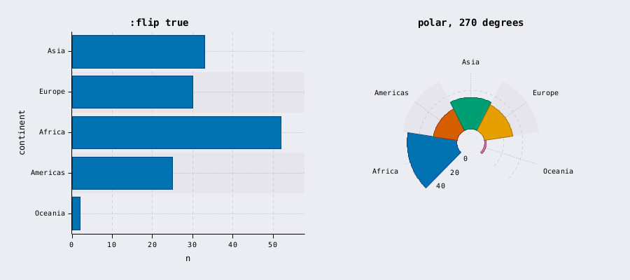
A polar :coord takes these keys beside its :kind :polar:
Polar coordinates work with these charts:
(sort (for [[kind constructor] (describe/chart-constructors)
:when (contains? (:coords (constructor)) :polar)]
kind))(:bar :line :parallel :partition :rect :rule :scatter :segment :text)In polar coordinates :flip true swaps the roles - the :y scale on angles, the :x scale on radii (left); :arcs true makes data lines between points follow the circle instead of chords (right):
(plot/render-image (plot/arrange [{:data counts
:mapping {:x :continent :y :n :color :continent}
:charts [(chart/bar {:width 0.8})]
:coord {:kind :polar}
:flip true
:labels {:title "polar, :flip true"}
:legend false}
{:data spiral
:mapping {:x :t :y :r}
:charts [(chart/line) (chart/scatter)]
:coord {:kind :polar :arcs true}
:labels {:title "polar, :arcs true"}}]
{:columns 2})
{:width 900 :height 420})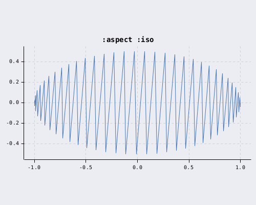
6.8 Aspect
This plot key fixes the ratio of the panel’s axes in data units:
In the plot below :aspect :iso keeps an ellipse twice as wide as high (the line joins the points in data order, line :order :data):
(plot/render-image {:data ellipse
:mapping {:x :x :y :y}
:charts [(chart/line {:order :data})]
:aspect :iso
:labels {:title ":aspect :iso"}}
{:width 500 :height 400})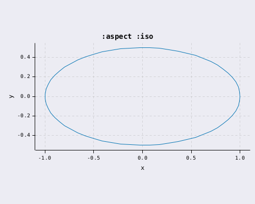
source: notebooks/reference/scales_axes_coords.clj